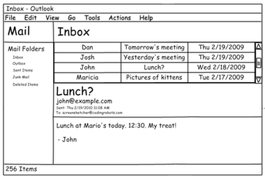

Back to table of contents
Credit: Wikipedia
How to critique
Andrew J. Ko
So you have a design. How do you know if it's any good? We're going to talk about three ways to know in this course: 1) critique, 2) empiricism, and 3) analysis.
When you're asked to give feedback on an idea, how can you give useful, constructive feedback? In the culture of design studios, designers give feedback via critiques. As some have noted, critiques are not just evaluation of designs, but collaborative deconstructions of what makes a design successful and what makes it fail.
In many ways, being critical is easier than being generative. Our society values criticism much more than it does creation, constantly engaging us in judging and analyzing rather than generating and creating things. It's also easy to provide vague, high level critical feedback like "Yeah, it's good" or "Not great, could be improved". This type of critique sounds like feedback, but it's not particularly useful or constructive feedback.
Design critiques have a number of unique features that try to ensure that feedback is useful:
- Critiques are two-way. It is not just one person providing critical feedback, but rather the designer articulating the rationale for their decisions (why they made the choices that they did) and the critic responding to those judgements. The critic might also provide their own counter-judgements to understand the designer's rationale further.
- The critic in a critique must engage deeply in the substance of the problem a designer is solving, meaning the more expertise they have on a problem, the better. The goal of a critique is to help someone else understand what you were trying to do and why, so they can provide their own perspective on what they would have done and why.
- Critiques are both divergent and convergent. Part of saying why something doesn't work is articulating what alternative design might work and why.
Now, some design critiques have a culture that borders on abuse. In some studios, people might call designs even designers by nasty names. This is often done to attempt to free people to provide deeply honest feedback about design, train designers to have "thick skin," impervious but open to negative feedback. But it can be highly discouraging to many novice designers, making them question their abilities.
In this class, we'll establish a different culture through a simple rule: if you're going to say something negative, say something positive first, and preferably last too. Some people call this the "hamburger" rule, other people call it a "shit sandwich." Whatever you want to call it, finding something positive to say about something you don't like forces you to consider the possibility that there is something actually good about the idea. It's your responsibility to search for both and share both good and bad aspects of an idea. This strategy has the added bonus of making people much more likely to listen to your feedback, because they'll be primed by positive feedback.
Let's look at an example of a critique. Most aren't filmed, so I can't show you one. Instead, I made one up. Let's pretend you showed me this user interface mockup and we engaged in a critique.

Here's one possible design critique that would follow:
- Me: Please tell us about what we're looking at.
- You: Sure. So I set out to design a cleaner alternative to the traditional Microsoft Outlook mail client. I was going for something that was simpler, had fewer options, and as more learnable that the current design.
- Me: What do you think works?
- You: I'm really happy with the subject, to, and from information. I think the subject is really nicely prominent, and that's because that's the content people really care about when they're trying to see a message. I also think the proportions of each of the tiled windows is nicely balanced, giving equal attention to all of the elements.
- Me: I agree, the balance is nice. It gives the greatest weight to content, which is what email is really about. I'm struggling a bit with the the large subject line in the mail body, however. Do you see how the subject appears in both the the message list and the message body? There's a redundancy there that I can't really see being helpful. Also, from a task flow perspective, someone would read the subject in the message list, and then select the message, so they'd already know what the subject was. It seems like wasted space. I do think the prominence of the font itself is nice, however, and could be a good place for other prominent metadata. Do you have any thoughts on what else might go there?
- You: that's a good question. I guess from a task perspective, the first thing someone really wants to see after reading the subject line is the message itself. Maybe that whole container of metadata isn't really necessary, or doesn't need to be as prominent.
- Me: I wouldn't go that far. Some of that metadata like who else received the message, could be pretty important. Maybe try putting the names of the other recipients.
There are several things to notice about the exchange above. It's respectful, with each person listening and accepting what the other person is saying. It's collaborative, with each person contributing knowledge to the conversation. It's grounded in design rationale and design judgement, focusing on why choices are made and why different choices were made, and how that might effect the success of the solution.
Another form of critique that can be applied to design is Socratic questioning. In this form of critique, the person giving the critique wants to deeply probe the designer's way of thinking and dig beneath the surface of their design. Some types of questions to achieve this include:
- Clarification questions, which encourage the designer to clarify their thought process.
- Questions that challenge the designer's assumptions.
- Questions that encourage the designer to consider alternative perspectives.
- Questions that encourage the designer to spell out the implications and consequences of their design.
Now imagine a dozen other students observing this dialog. What would they get from it? They'd see, like you're seeing on this web page, an example of how to share feedback, how to receive it, and deep domain knowledge about the nature of email as social media. This means that you have much to gain just by watching critique happen, in addition to participating in it yourself.
Do you need expertise to be effective at design critique? Some expertise of some kind is helpful. First and foremost, it helps to be good at critique. It helps even more if you know something about the domain a design is exploring. Recent evidence suggests, however, that peers in classrooms can get pretty close to more expert feedback when students get feedback on their feedback. That means that we'll be spending a lot of time in class practicing critique, but also critiquing each other's critique. Nothing can replace domain expertise, however, which is invaluable for understanding the structure and dynamics of a problem space.
There's one critical aspect of critiques that we haven't discussed yet, however. How does someone judge what makes a design "good"?
Let's start with some ideas that you should not use to judge designs:
- Intuitive. Human beings are not born with much innate knowledge. What people mean when they use this word is that someone can infer from the information in a design what the purpose or intent of something is. That is not intuitive, that is deductive.
- User-friendly. This is a horribly imprecise phrase. What does it mean to be "friendly" with a user? Nice? Supportive? Helpful? This phrase suggests a lot without meaning a lot. Be more specific.
In my experience, good design is mostly subjective. Search the web and you'll find a myriad of ideas about what makes design good or bad. What's underneath these ideas is actually many different goals and values in design, most of which conflict. Let's look at some of these different objectives:
- Good design is simple. This is a design aesthetic that prizes minimalism and learnability. These can be good qualities, reducing how much people have to learn to use an interface and how long it takes to learn. But simplicity isn't always good. Does Kanye West want his sound production tools to be simple? No, he wants them to be expressive and powerful, which often mean they're complex.
- Good design is novel. In some design cultures (e.g., fashion design), the best design is the new design that pushes boundaries and explores undiscovered territories. Novelty is powerful in that it has the power to surprise and empower in new ways. It also has the power to convey status, because possession of new design suggests knowledge and awareness of the bleeding edge of human creativity, which can have status in some cultures. But novelty trades off against simplicity, because simplicity often requires familiarity and convention.
- Good design is powerful. This aesthetic values the ability of designs to augment human ability. Take, for example, a graphing calculator. These are exceedingly complex little devices with thousands of functions that can support almost any kind of mathematics. It's certainly not simple or novel, but it's extremely powerful. But power isn't always good. Sometimes power leads to complexity that poses barriers to use and adoption.
- Good design is invisible. Some trends in design aesthetics value designs that "get out of the way", trying to bring a person as close as possible to their activity, their information, and their goals. Designs that achieve invisibility don't try to be the center of attention, but rather put the attention on the work that a person is doing with the design. Good example of designs that attempt to be invisible are the many intelligent assistants such as Siri and Echo, which try to provide "natural" interfaces that don't need to be learned, personalized, or calibrated. All of this may come at the expense of power and control, however, as the mechanisms we often use for invisibility are automated.
- Good design is universal. This views design as something that all of humanity should be able to access, prizing equality over other values. For example, designing a website that is screen readable so that people who are blind can read it often constrains the type of interactivity that can be used on a site. What's better: power and novelty or universal access? Maybe there are some types of designs that are so powerful, they should only be used by certain people with certain knowledge and skills.
Of course, you can see by now that I take a relativistic view of design aesthetics. I think all design choices are made relative to a prioritized set of values. I think good design process makes these values explicit, consciously deciding which aesthetics supersede others. Therefore, in this class, I'll judge your design process and final designs relative to the goals you define.
Next chapter: How to Evaluate Empirically
Further reading
Christensen, T. (2016). Four Things Working at Facebook Has Taught Me About Design Critique. Medium.
Irandoust, H. (2006). The Logic of Critique. Argumentation, 20(2), 133-148.
Kowitz, B. (2014). The Key to Happy, Productive Designers: Teaching Your Team To critique. VentureBeat.
Kulkarni, C., Wei, K. P., Le, H., Chia, D., Papadopoulos, K., Cheng, J., ... & Klemmer, S. R. (2015). Peer and self assessment in massive online classes. In Design thinking research (pp. 131-168). Springer International Publishing.
Norman, D. A. (1999). Affordance, conventions, and design. interactions, 6(3), 38-43.
Story, M. F. (1998). Maximizing usability: the principles of universal design. Assistive technology, 10(1), 4-12.